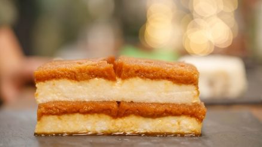

Sütlü Îrmik Tatlısı

Bugün sizlere şöhreti tüm dünyaya yayılabilecek, kolay ama bir o kadar da lezzetli bir sütlü irmik tatlısı tarifimiz var.
Malzemeler
- 4 çorba kaşığı, 100 gr şeker
- 2 bardak, 400 ml kaynar su
- 7 dilim Etimek
- 1 lt süt
- 8 çorba kaşığı, 200 gr şeker
- 9 çorba kaşığı, 120 gr irmik
- 1 çorba tereyağı
- 1 paket vanilin
- 2 çorba kaşığı hindistan cevizi
Hazırlanışı
- 4 çorba kaşığı şekeri tavaya yayın. Kısık ateşte şeker iyice eriyene kadar bekleyin.
Erimeyen yerlerin erimesini sağlamak için arada tavanın yönünü değiştirin.
Kalan beyaz yerleri karıştırmadan etrafındaki erimiş kısımları çevirin ki kendi sıcaklığıyla erisin.
- Tamamen eriyince 400 gr kaynar suyu azar azar ve karıştırarak ekleyip karıştırın. şeke çok kararlamamalı, kızıl, kahverengi bir renkte olmalı.
Suyu ekledikten sonra kaynayınca altını kapatabilirsiniz.
- 7 dilim Etimek’i tepsiye dizin. Benim kullandığım tepsi yaklaşık 25 cm e 15 cm boyutlarında, daha büyük bir tepsi kullanırsanız daha fazla şerbet ve etimeke ihtiyacınız olduğunu unutmayın.
Dizdiğiniz Etimek’lerin üzerine sıcak şerbeti hepsini iyice ıslatarak dökün. Başta çok gelebilir ama etimek hepsini çekecektir.
- Geniş bir tencereye 1 lt süt koyun.
Ardından 8 çorba kaşığı şeker ve 9 çorba kaşığı irmiği ekleyin ve kaynayana kadar karıştırın.
Kaynadıktan sonra altını biraz kısın ve kıvamlanana kadar kadar pişirmeye devam edin.
Ardından 1 çorba kaşığı tereyağını, 1 paket vanilini ve 2 çorba kaşığı hindistan cevizini ekleyip karıştırın.
- Çok katılaşmadan henüz akışkan haldeyken etimeklerin üzerine dökün. Önce oda sıcaklığına gelene kadar dışarıda ardından buzdolabında iyice soğuyana kadar bekletin.
Servis ederken düz bir tabağın üzerine tepsiyi ters çevirince tatlı kendini bırakacaktır. Dilimleyip afiyetle yemeniz dileğiyle. Dİlerseniz etimekli yerine içine parça çikolata koyup da yapabilirsiniz.